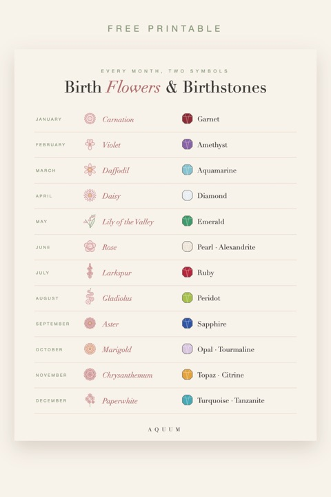

Birth Flowers and Birthstones by Month: Free Printable Chart
2026-10-02
Written by the team behind Aquum, a small birth flower gift shop. How we make money.

Every birth month has two traditional symbols: a flower and a gemstone. They come from different traditions, but they pair beautifully, and putting both together makes a gift feel complete: a pendant with their birthstone and a card with their flower, or a print that shows both.
Download the free birth flowers and birthstones chart (PDF)
Birth flower and birthstone for every month
| Month | Birth flower | Birthstone |
|---|---|---|
| January | Carnation (and snowdrop) | Garnet |
| February | Violet (and primrose) | Amethyst |
| March | Daffodil (and jonquil) | Aquamarine |
| April | Daisy (and sweet pea) | Diamond |
| May | Lily of the valley (and hawthorn) | Emerald |
| June | Rose (and honeysuckle) | Pearl, alexandrite, moonstone |
| July | Larkspur (and water lily) | Ruby |
| August | Gladiolus (and poppy) | Peridot, spinel, sardonyx |
| September | Aster (and morning glory) | Sapphire |
| October | Marigold (and cosmos) | Opal, tourmaline |
| November | Chrysanthemum | Topaz, citrine |
| December | Paperwhite (and holly) | Turquoise, tanzanite, zircon |
The birthstones follow the modern list used by most jewelers in the United States. Where a month has more than one stone, the first is the most common choice. The flowers in parentheses are each month's second birth flower.
How flowers and stones go together
Some months pair naturally by color or meaning:
- February: the violet and the amethyst are both purple, and both carry a quiet, loyal feeling.
- May: green emerald and the white bells of lily of the valley, both symbols of spring and renewal.
- July: the red ruby and the larkspur's open heart, both about love and passion.
- September: the blue sapphire and the aster, both linked with wisdom.
Others contrast, which can be just as lovely: April's sparkling diamond next to the simple daisy says "strong and joyful" in one gift.
Gift ideas that use both
- A birthstone piece with a birth flower card. Jewelry plus one of our free birthday cards with the matching flower.
- A framed print with the stone's color. Choose a frame or mat in the birthstone's color for one of our birth flower prints.
- For a mother's or grandmother's gift: one stone and one flower for each child or grandchild. Our family birth flower bouquet maker draws everyone's flowers together.
Not sure of someone's flower? The birth flower finder tells you from a birthday, and every month has its own guide in birth flowers by month.